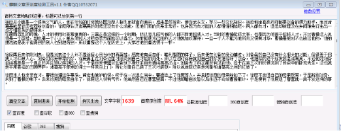
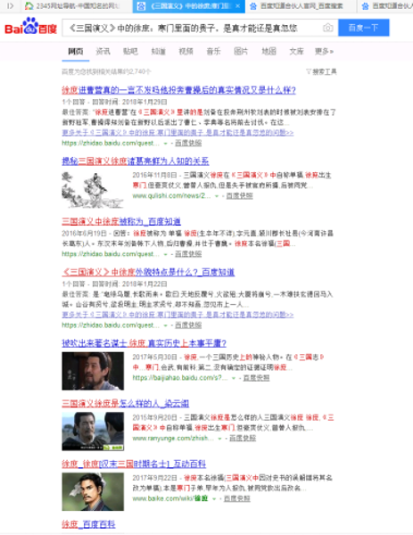

《三国演义》中的徐庶：寒门里面的贵子，是真才能还是真忽悠
徐庶从小就是一个很有义气的人，他在年轻的时候曾经因为帮人报仇而被官府追杀。后来虽然被救，便弃武从文，学习一些文化知识。徐庶和诸葛亮同样都是刘备的得力助手，而且诸葛亮就是徐庶推荐给刘备的。徐庶刚认识诸葛亮的时候还没有什么成就，但他们俩的关系非常好，也许因为有才能的人都惺惺相惜吧。两人都有才，但是却被埋没在乡间难免衍生出一点互相联系的感情来。
在政局混乱的时候，人才的使用时非常重要的。三国正是这样的一个时期，所以但凡成气候的人都不断地招揽人才。当时的曹操能成大事，也是因为他善于招揽人才。不过曹操这人说他是一个英雄，却也是一个小人。单从他对人才的态度方面就可以看出，如果能收为己用的人才他就加以厚待。一旦一个人不能为他所用又很有才华，曹操是绝对不会放过他的，他的想法就是我不能得到的别人也别想得到。所以曹操这个人在历史上，大家对他的看法很不一样。
徐庶再后来依附刘表，但是刘表这个人并不是徐庶心目当中的真英雄。感觉他有点忠奸，唯利是图的样子，后来便在刘备的身边辅佐。刘备虽然自己没有什么很大的才能，但很善于招揽人才识破人心，刘备对徐庶非常的好，徐庶真正在刘备这里才感受到自己才能的用处。所以在这时徐庶就把自己的好友推荐给了刘备。他推荐的这个好友就是诸葛亮，不过他对刘备说诸葛亮是一个真正的并且难以得到的人才。于是徐庶便建议刘备放下身段亲自去请诸葛亮出山。刘备去了两次都没有见到他，终于在第三次的时候见到了传说中的卧龙先生。这也就是非常著名的三顾茅庐，诸葛亮不像别的谋士一样亲自上门，得让刘备自己请了三次才请到。所以说徐庶还真是刘备和诸葛亮之间的红娘了。
徐庶本人也非常有才，曹操知道这件事后，肯定也嫉妒的很。终于在一次逃亡当中，曹操追上了徐庶等人，并且把徐庶的母亲给扣下了。徐庶不舍得自己的母亲受苦。于是辞别刘备，来到了曹操的帐下。后来徐庶的母亲自杀了，徐庶这人很有气节，他虽然自己在曹营里面，不过他却暗自发誓以后永远不会给曹操献计。于是便有了徐庶进了曹营就一言不发这样的事。
有很多人认为，徐庶进曹营以后没有献出一条好计策。并且在后来的日子中，迅速仅仅给曹操献过两个计策，但很不幸的都让曹操大败而归，损失了很多兵将。有人便认为徐庶除了给刘备推荐过诸葛亮这个人才以外还真没有做过什么能表现他才华的事情。也有可能徐庶根本就没有什么才华，诸葛亮到了刘备身边以后徐庶觉得自己没有什么用处，便投身到了曹操的部下，并且以自己的誓言为说法给自己找一个台阶下。并且在很多本书当中都没有讲到徐庶这个人的才能。
而且在三国中，曹操并不是很重视徐庶，虽然说得到徐庶让曹操废了不少功夫。如果徐庶和他的好友石广元后来在曹操的身边并没有什么很高的官职，从此可以看出曹操对他们其实并不很太意。我们要知道曹操对人才的态度还是非常可以的，如果真正有才曹操不会让他受到委屈的。而且据一些研究说，三国演义当中曹操通过抓走徐庶的老妈来骗徐庶入营这件事情其实是假的。
当然也有人说，仔细考量一下徐庶所献的两个计策，从另一个方面来看其实间接的帮助了自己的前主人刘备。这种说法虽然有些道理，但在小编看来其实他在陷害曹操的同时，并不也是仅仅帮助了刘备的，因为当时群雄并起，各方势力都不统一，削弱任何一方，得益的也并不只有刘备。
小编认为也许徐庶并没有什么很大的才能，他的才能我们只能从诸葛亮的口中来得知。而且后来诸葛亮来到了刘备身边以后徐庶的光芒就完全没有了，再后来也并没有为刘备做出什么贡献。后来他来到了曹操的身边，也并没有什么很突出的政绩。也许徐庶也是有才能的，只是在当时的那种社会背景下，人才实在是太多了，像徐庶这样子的也只能算一个平庸之辈，没有像诸葛亮那样出类拔萃。但徐庶的贡献也是很明显的，首先他给了刘备一个真正的人才，让刘备在后面的争雄争霸当中有了得力的助手。也让诸葛亮这样一个超智慧的人出现在大家的眼前让大家见识到了他的能力。另外一个，其实我让我们的成语字典上有多了一个词，那就是身在曹营心在汉。

